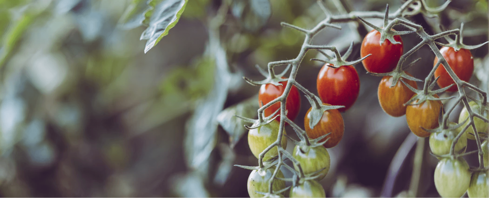
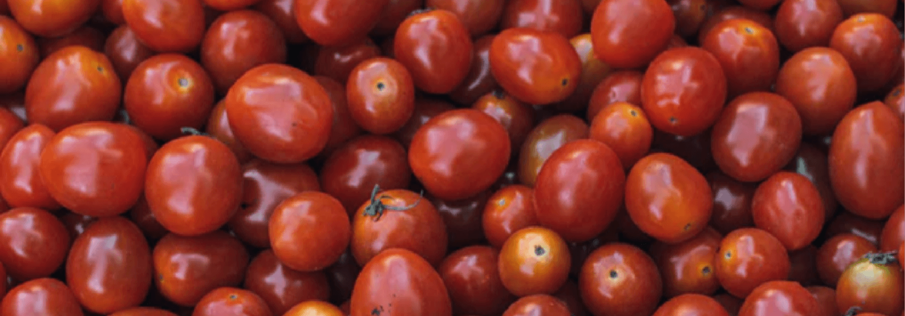
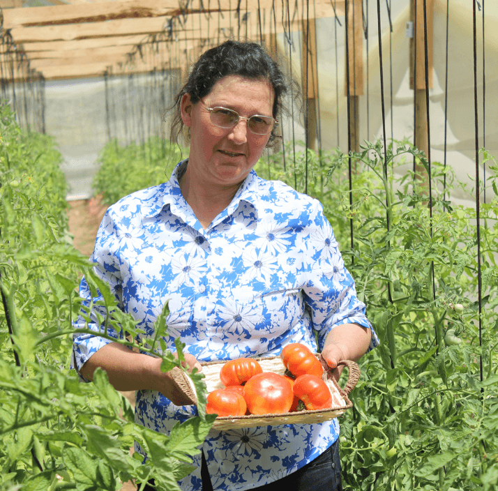
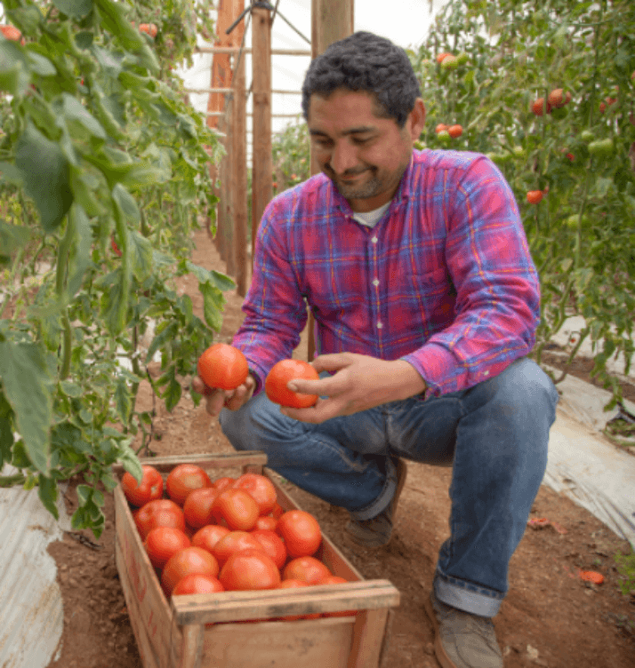

Tomates 100% orgánicos
En Tía Tomate estamos comprometidos con tu salud y la de tu familia, de modo que probarás tomates ricos y sin sabor artificial.
Para darle vida a nuestros productos usamos materias primas orgánicas y que estén en completo equilibrio con la naturaleza. Así que al comprar cualquier tipo de tomate connosotros te asegurarás de que comerás la mejor calidad de tomates limachinos.

Desde Limache con amor
Los tomates que estás a punto de comprar son nacidos y criados en una de las mejores zonas para la producción de tomates de Chile. El proceso que conlleva criar estos tomates toma alrededor de tres meses de muchos cariños y cuidados.
Los tomates toman todos los nutrientes de esta hermosa tierra para que luego tú los disfrutes en cualquier ocasión.
NOSOTROS

Javiera Kunstmann
Javiera es la orgullosa dueña de Tía Tomate. Nacida y criada en Limache, se siente tan a gusto aquí como los tomates que coseha.
Ella es la encargada administrativa de Tía Tomate y estará muy a gusto que la contactes para probar la mejor calidad de tomates de todo Limache.
Javiera y su marido llevan más de 15 años en el rubro ofreciendo la mejor calidad en tomates y desde el 2015 comenzaron con la producción de tomates orgánicos limachinos.

Roberto Pacheco
Roberto es el marido de Javiera. Él es el encargado de darle vida a los tomates, usando su vasta experiencia en la agricultura ha sabido seleccionar las mejores cepas de tomates para su cría y cosecha.